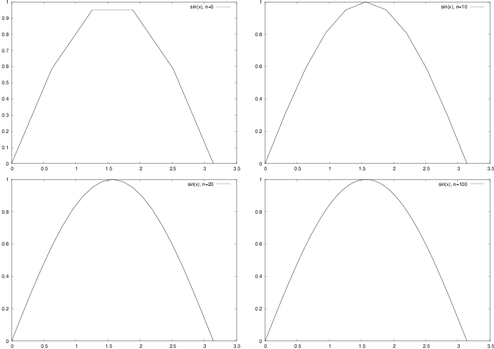
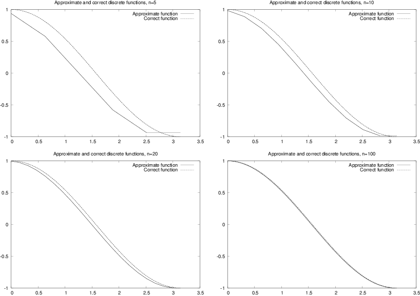
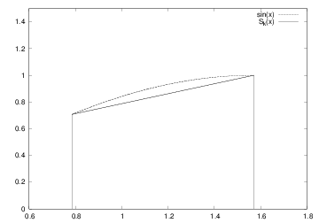
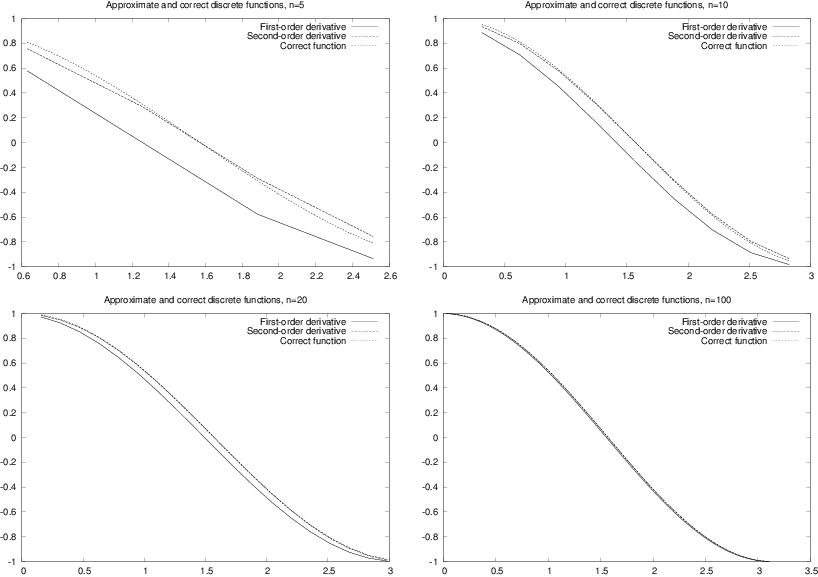
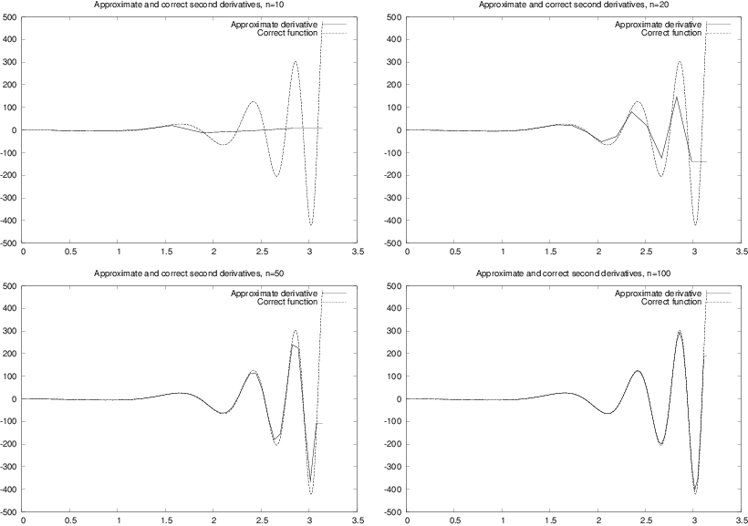

Discrete functions
The sine function
Interpolation
Evaluating the approximation
Generalization
Differentiation becomes finite differences
Differentiating the sine function
Differences on a mesh
Generalization
Integration becomes summation
Dividing into subintervals
Integration on subintervals
Adding the subintervals
Generalization
Taylor series
Approximating functions close to one point
Approximating the exponential function
More accurate expansions
Accuracy of the approximation
Derivatives revisited
More accurate difference approximations
Second-order derivatives
Exercises
Exercise 1: Interpolate a discrete function
Exercise 2: Study a function for different parameter values
Exercise 3: Study a function and its derivative
Exercise 4: Use the Trapezoidal method
Exercise 5: Compute a sequence of integrals
Exercise 6: Use the Trapezoidal method
Exercise 7: Compute trigonometric integrals
Exercise 8: Plot functions and their derivatives
Exercise 9: Use the Trapezoidal method
References
In this document we will discuss how to differentiate and integrate
functions on a computer. To do that, we have to care about how to
treat mathematical functions on a computer. Handling mathematical
functions on computers is not entirely straightforward: a function
\( f(x) \) contains an infinite amount of information (function values at
an infinite number of \( x \) values on an interval), while the computer
can only store a finite amount of data.
(Allow yourself a moment or two to
think about the terms finite and infinite; infinity is not an
easy term, but it is not infinitely difficult. Or is it?)
Think about the \( \cos x \) function. There are typically two ways
we can work with this function on a computer. One way is to run an
algorithm to compute its value,
or we simply call math.cos(x)
(which runs a similar type of algorithm), to compute an approximation
to \( \cos x \) for a given \( x \), using a finite number of
calculations. The other way is to store \( \cos x \) values
in a table for a finite number of \( x \) values (of
course, we need to run an algorithm to populate the table with \( \cos
x \) numbers). and use the
table in a smart way to compute \( \cos x \) values. This latter way,
known as a discrete representation of a function,
is in focus in the present document. With a discrete function representation,
we can easily integrate and differentiate the function too.
Read on to see how we can do that.
The folder src/discalc contains all the program example files referred to in this document.
Physical quantities, such as temperature, density, and velocity, are
usually defined as continuous functions of space and time. However, as
mentioned in above, discrete versions of the functions are more
convenient on computers. We will illustrate the concept of discrete
functions through some introductory examples. In fact, we use discrete
functions when plotting curves on a computer: we define a finite set
of coordinates x and store the corresponding function values
f(x) in an array. A plotting program will then draw straight
lines between the function values. A discrete representation of a
continuous function is, from a programming point of view, nothing but
storing a finite set of coordinates and function values in an
array. Nevertheless, we will in this document be more formal and
describe discrete functions by precise mathematical terms.
Suppose we want to generate a plot of the sine function for values of \( x \) between \( 0 \) and \( \pi \). To this end, we define a set of \( x \)-values and an associated set of values of the sine function. More precisely, we define \( n+1 \) points by $$ \begin{equation} x_{i}=ih\text{ for }i=0,1,\ldots ,n, \tag{1} \end{equation} $$ where \( h=\pi/n \) and \( n\geq 1 \) is an integer. The associated function values are defined as $$ \begin{equation} s_{i}=\sin(x_{i})\text{ for }i=0,1,\ldots ,n\tp \tag{2} \end{equation} $$ Mathematically, we have a sequence of coordinates \( (x_i)_{i=0}^n \) and of function values \( (s_i)_{i=0}^n \). (Here we have used the sequence notation \( (x_i)_{i=0}^n = x_0,x_1,\ldots,x_n \).) Often we "merge" the two sequences to one sequence of points: \( (x_i,s_i)_{i=0}^n \). Sometimes we also use a shorter notation, just \( x_i \), \( s_i \), or \( (x_i,s_i) \) if the exact limits are not of importance. The set of coordinates \( (x_i)_{i=0}^n \) constitutes a mesh or a grid. The individual coordinates \( x_i \) are known as nodes in the mesh (or grid). The discrete representation of the sine function on \( [0,\pi] \) consists of the mesh and the corresponding sequence of function values \( (s_i)_{i=0}^n \) at the nodes. The parameter \( n \) is often referred to as the mesh resolution.
In a program, we represent the mesh by a coordinate array, say x, and
the function values by another array, say s.
To plot the sine function we can simply write
from scitools.std import *
n = int(sys.argv[1])
x = linspace(0, pi, n+1)
s = sin(x)
plot(x, s, legend='sin(x), n=%d' % n, savefig='tmp.pdf')
Figure 1 shows the resulting plot for
\( n=5,10,20 \) and \( 100 \).
Because the plotting program draws straight lines between the
points in x and s, the
curve looks smoother the more points we use, and since \( \sin(x) \) is
a smooth function, the plots in Figure 1
do not look sufficiently good. However,
we can with our eyes hardly distinguish the plot with 100 points from
the one with 20 points, so 20 points seem sufficient in this example.
Figure 1: Plots of \( \sin(x) \) with various \( n \).

There are no tests on the validity of the input data (n)
in the previous program.
A program including these tests reads
from scitools.std import *
n = int(sys.argv[1])
x = linspace(0, pi, n+1)
s = sin(x)
plot(x, s, legend='sin(x), n=%d' % n, savefig='tmp.pdf')
Suppose we have a discrete representation of the sine function: \( (x_i,s_i)_{i=0}^n \). At the nodes we have the exact sine values \( s_i \), but what about the points in between these nodes? Finding function values between the nodes is called interpolation, or we can say that we interpolate a discrete function.
A graphical interpolation procedure could be to look at one of the plots in Figure 1 to find the function value corresponding to a point \( x \) between the nodes. Since the plot is a straight line from node value to node value, this means that a function value between two nodes is found from a straight line approximation to the underlying continuous function. (Strictly speaking, we also assume that the function to be interpolated is rather smooth. It is easy to see that if the function is very wild, i.e., the values of the function change very rapidly, this procedure may fail even for very large values of \( n \).) We formulate this procedure precisely in terms of mathematics in the next paragraph.
Assume that we know that a given \( x^{\ast} \) lies in the interval from \( x=x_{k} \) to \( x_{k+1} \), where the integer \( k \) is given. In the interval \( x_{k}\leq x < x_{k+1} \), we define the linear function that passes through \( (x_k,s_k) \) and \( (x_{k+1},s_{k+1}) \): $$ \begin{equation} S_{k}(x)=s_{k}+\frac{s_{k+1}-s_{k}}{x_{k+1}-x_{k}}(x-x_{k})\tp \tag{3} \end{equation} $$ That is, \( S_k(x) \) coincides with \( \sin (x) \) at \( x_k \) and \( x_{k+1} \), and between these nodes, \( S_k(x) \) is linear. We say that \( S_k(x) \) interpolates the discrete function \( (x_i,s_i)_{i=0}^n \) on the interval \( [x_k,x_{k+1}] \).
Given the values \( (x_{i},s_{i})_{i=0}^{n} \) and the formula
(3), we want to compute an approximation of the
sine function for any \( x \) in the interval from \( x=0 \) to \( x=\pi \). In order to do
that, we have to compute \( k \) for a given value of \( x \). More precisely, for a
given \( x \) we have to find k such that \( x_{k} \leq x\leq x_{k+1} \). We
can do that by defining
$$
\begin{equation*}
k=\left\lfloor x/h\right\rfloor
\end{equation*}
$$
where the function \( \left\lfloor z\right\rfloor \) denotes the largest integer
that is smaller than \( z \). In Python, \( \left\lfloor z\right\rfloor \)
is computed by int(z).
The program below takes \( x \) and \( n \) as input and
computes the approximation of \( \sin(x) \). The program prints the approximation
\( S(x) \) and the exact value of \( \sin(x) \) so we can look at the
development of the error when \( n \) is increased.
(The value is not really exact, it is the value
of \( \sin(x) \) provided by the computer, math.sin(x), and
this value is calculated from an algorithm that only yields
an approximation to
\( \sin(x) \).)
from numpy import *
import sys
xp = eval(sys.argv[1])
n = int(sys.argv[2])
def S_k(k):
return s[k] + \
((s[k+1] - s[k])/(x[k+1] - x[k]))*(xp - x[k])
h = pi/n
x = linspace(0, pi, n+1)
s = sin(x)
k = int(xp/h)
print 'Approximation of sin(%s): ' % xp, S_k(k)
print 'Exact value of sin(%s): ' % xp, sin(xp)
print 'Eror in approximation: ', sin(xp) - S_k(k)
Terminal> python src-discalc/eval_sine.py 'sqrt(2)' 5
Approximation of sin(1.41421356237): 0.951056516295
Exact value of sin(1.41421356237): 0.987765945993
Eror in approximation: 0.0367094296976
Terminal> python src-discalc/eval_sine.py 'sqrt(2)' 10
Approximation of sin(1.41421356237): 0.975605666221
Exact value of sin(1.41421356237): 0.987765945993
Eror in approximation: 0.0121602797718
Terminal> python src-discalc/eval_sine.py 'sqrt(2)' 20
Approximation of sin(1.41421356237): 0.987727284363
Exact value of sin(1.41421356237): 0.987765945993
Eror in approximation: 3.86616296923e-05
Note that the error is reduced as the \( n \) increases.
In general, we can create a discrete version of a continuous function as follows. Suppose a continuous function \( f(x) \) is defined on an interval ranging from \( x=a \) to \( x=b \), and let \( n\geq 1 \), be a given integer. Define the distance between nodes, $$ \begin{equation*} h=\frac{b-a}{n}, \end{equation*} $$ and the nodes $$ \begin{equation} x_{i}=a+ih\text{ for }i=0,1,\ldots ,n\tp \tag{4} \end{equation} $$ The discrete function values are given by $$ \begin{equation} y_i=f(x_{i})\text{ for }i=0,1,\ldots ,n\tp \tag{5} \end{equation} $$ Now, \( (x_{i},y_{i})_{i=0}^{n} \) is the discrete version of the continuous function \( f(x) \). The program discrete_func.py takes \( f,a,b \) and \( n \) as input, computes the discrete version of \( f \), and then applies the discrete version to make a plot of \( f \).
def discrete_func(f, a, b, n):
x = linspace(a, b, n+1)
y = zeros(len(x))
for i in xrange(len(x)):
y[i] = func(x[i])
return x, y
from scitools.std import *
f_formula = sys.argv[1]
a = eval(sys.argv[2])
b = eval(sys.argv[3])
n = int(sys.argv[4])
f = StringFunction(f_formula)
x, y = discrete_func(f, a, b, n)
plot(x, y)
We can equally well make a vectorized version of the discrete_func
function:
def discrete_func(f, a, b, n):
x = linspace(a, b, n+1)
y = f(x)
return x, y
StringFunction tool to work properly in vectorized
mode, we need to
do
f = StringFunction(f_formula)
f.vectorize(globals())
You have heard about derivatives. Probably, the following formulas are well known to you: $$ \begin{align*} \frac{d}{dx}\sin(x) & =\cos(x),\\ \frac{d}{dx}\ln(x) & =\frac{1}{x},\\ \frac{d}{dx}x^{m} & =mx^{m-1}, \end{align*} $$ But why is differentiation so important? The reason is quite simple: the derivative is a mathematical expression of change. And change is, of course, essential in modeling various phenomena. If we know the state of a system, and we know the laws of change, then we can, in principle, compute the future of that system. The document Introduction to differential equations [1] treats this topic in detail. Another document, Sequences and difference equations [2], also computes the future of systems, based on modeling changes, but without using differentiation. In the document [1] you will see that reducing the step size in the difference equations results in derivatives instead of pure differences. However, differentiation of continuous functions is somewhat hard on a computer, so we often end up replacing the derivatives by differences. This idea is quite general, and every time we use a discrete representation of a function, differentiation becomes differences, or finite differences as we usually say.
The mathematical definition of differentiation reads $$ \begin{equation*} f^{\prime}(x)=\lim_{\varepsilon\rightarrow0}\frac{f(x+\varepsilon )-f(x)}{\varepsilon}\tp \end{equation*} $$ You have probably seen this definition many times, but have you understood what it means and do you think the formula has a great practical value? Although the definition requires that we pass to the limit, we obtain quite good approximations of the derivative by using a fixed positive value of \( \varepsilon \). More precisely, for a small \( \varepsilon>0 \), we have $$ \begin{equation*} f^{\prime}(x)\approx\frac{f(x+\varepsilon)-f(x)}{\varepsilon}\tp \end{equation*} $$ The fraction on the right-hand side is a finite difference approximation to the derivative of \( f \) at the point \( x \). Instead of using \( \varepsilon \) it is more common to introduce \( h=\varepsilon \) in finite differences, i.e., we like to write $$ \begin{equation} f^{\prime}(x)\approx\frac{f(x+h)-f(x)}{h}\tp \tag{6} \end{equation} $$
In order to get a feeling for how good the approximation (6) to the derivative really is, we explore an example. Consider \( f(x)=\sin(x) \) and the associated derivative \( f^{\prime}(x)=\cos(x) \). If we put $x=1,$we have $$ \begin{equation*} f^{\prime}(1)=\cos(1)\approx 0.540, \end{equation*} $$ and by putting \( h=1/100 \) in (6) we get $$ \begin{equation*} f^{\prime}(1)\approx\frac{f(1+1/100)-f(1)}{1/100}=\frac{\sin(1.01)-\sin (1)}{0.01}\approx0.536\tp \end{equation*} $$
The program forward_diff.py, shown below, computes the derivative of \( f(x) \) using the approximation (6), where \( x \) and \( h \) are input parameters.
def diff(f, x, h):
return (f(x+h) - f(x))/float(h)
from math import *
import sys
x = eval(sys.argv[1])
h = eval(sys.argv[2])
approx_deriv = diff(sin, x, h)
exact = cos(x)
print 'The approximated value is: ', approx_deriv
print 'The correct value is: ', exact
print 'The error is: ', exact - approx_deriv
Terminal> python src-discalc/forward_diff.py 1 0.001
The approximated value is: 0.53988148036
The correct value is: 0.540302305868
The error is: 0.000420825507813
Frequently, we will need finite difference approximations to a discrete function defined on a mesh. Suppose we have a discrete representation of the sine function: \( (x_i,s_i)_{i=0}^n \), as introduced in the section The sine function. We want to use (6) to compute approximations to the derivative of the sine function at the nodes in the mesh. Since we only have function values at the nodes, the \( h \) in (6) must be the difference between nodes, i.e., \( h = x_{i+1}-x_i \). At node \( x_i \) we then have the following approximation of the derivative: $$ \begin{equation} z_{i}=\frac{s_{i+1}-s_{i}}{h}, \tag{7} \end{equation} $$ for \( i=0,1,\ldots ,n-1 \). Note that we have not defined an approximate derivative at the end point \( x=x_{n} \). We cannot apply (7) directly since \( s_{n+1} \) is undefined (outside the mesh). However, the derivative of a function can also be defined as $$ \begin{equation*} f^{\prime}(x)=\lim_{\varepsilon\rightarrow0}\frac{f(x)-f(x-\varepsilon )}{\varepsilon}, \end{equation*} $$ which motivates the following approximation for a given \( h>0 \), $$ \begin{equation} f^{\prime}(x)\approx\frac{f(x)-f(x-h)}{h}\tp \tag{8} \end{equation} $$ This alternative approximation to the derivative is referred to as a backward difference formula, whereas the expression (6) is known as a forward difference formula. The names are natural: the forward formula goes forward, i.e., in the direction of increasing \( x \) and \( i \) to collect information about the change of the function, while the backward formula goes backwards, i.e., toward smaller \( x \) and \( i \) value to fetch function information.
At the end point we can apply the backward formula and thus define $$ \begin{equation} z_{n}=\frac{s_{n}-s_{n-1}}{h}\tp \tag{9} \end{equation} $$ We now have an approximation to the derivative at all the nodes. A plain specialized program for computing the derivative of the sine function on a mesh and comparing this discrete derivative with the exact derivative is displayed below (the name of the file is diff_sine_plot1.py).
from scitools.std import *
n = int(sys.argv[1])
h = pi/n
x = linspace(0, pi, n+1)
s = sin(x)
z = zeros(len(s))
for i in xrange(len(z)-1):
z[i] = (s[i+1] - s[i])/h
# Special formula for end point_
z[-1] = (s[-1] - s[-2])/h
plot(x, z)
xfine = linspace(0, pi, 1001) # for more accurate plot
exact = cos(xfine)
hold()
plot(xfine, exact)
legend('Approximate function', 'Correct function')
title('Approximate and discrete functions, n=%d' % n)
In Figure 2 we see the resulting graphs for \( n=5,10,20 \) and \( 100 \). Again, we note that the error is reduced as \( n \) increases.
Figure 2: Plots for exact and approximate derivatives of \( \sin(x) \) with varying values of the resolution \( n \).

The discrete version of a continuous function \( f(x) \) defined on an interval \( \left[ a,b\right] \) is given by \( (x_{i},y_{i})_{i=0}^{n} \) where $$ \begin{equation*} x_{i}=a+ih, \end{equation*} $$ and $$ \begin{equation*} y_{i}=f(x_{i}) \end{equation*} $$ for \( i=0,1,\ldots ,n \). Here, \( n\geq 1 \) is a given integer, and the spacing between the nodes is given by $$ \begin{equation*} h=\frac{b-a}{n}\tp \end{equation*} $$ A discrete approximation of the derivative of \( f \) is given by \( (x_{i} ,z_{i})_{i=0}^{n} \) where $$ \begin{equation*} z_{i}=\frac{y_{i+1}-y_{i}}{h} \end{equation*} $$ \( i=0,1,\ldots ,n-1 \), and $$ \begin{equation*} z_{n}=\frac{y_{n}-y_{n-1}}{h}. \end{equation*} $$ The collection \( (x_{i},z_{i})_{i=0}^{n} \) is the discrete derivative of the discrete version \( (x_{i},f_{i})_{i=0}^{n} \) of the continuous function \( f(x) \). The program below, found in the file diff_func.py, takes \( f \), \( a \), \( b \), and \( n \) as input and computes the discrete derivative of \( f \) on the mesh implied by \( a \), \( b \), and \( h \), and then a plot of \( f \) and the discrete derivative is made.
def diff(f, a, b, n):
x = linspace(a, b, n+1)
y = zeros(len(x))
z = zeros(len(x))
h = (b-a)/float(n)
for i in xrange(len(x)):
y[i] = func(x[i])
for i in xrange(len(x)-1):
z[i] = (y[i+1] - y[i])/h
z[n] = (y[n] - y[n-1])/h
return y, z
from scitools.std import *
f_formula = sys.argv[1]
a = eval(sys.argv[2])
b = eval(sys.argv[3])
n = int(sys.argv[4])
f = StringFunction(f_formula)
y, z = diff(f, a, b, n)
plot(x, y, 'r-', x, z, 'b-',
legend=('function', 'derivative'))
Some functions can be integrated analytically. You may remember the following cases, $$ \begin{align*} \int x^{m}dx & =\frac{1}{m+1}x^{m+1}\text{ for }m\neq-1,\\ \int\sin(x)dx & =-\cos(x),\\ \int\frac{x}{1+x^{2}}dx & =\frac{1}{2}\ln\left( x^{2}+1\right) . \end{align*} $$ These are examples of so-called indefinite integrals. If the function can be integrated analytically, it is straightforward to evaluate an associated definite integral. Recall, in general, that $$ \begin{equation*} \left[ f(x)\right] _{a}^{b}=f(b)-f(a). \end{equation*} $$ Some particular examples are $$ \begin{align*} \int_{0}^{1}x^{m}dx & =\left[ \frac{1}{m+1}x^{m+1}\right] _{0}^{1}=\frac {1}{m+1},\\ \int_{0}^{\pi}\sin(x)dx & =\left[ -\cos(x)\right] _{0}^{\pi}=2,\\ \int_{0}^{1}\frac{x}{1+x^{2}}dx & =\left[ \frac{1}{2}\ln\left( x^{2}+1\right) \right] _{0}^{1}=\frac{1}{2}\ln2. \end{align*} $$ But lots of functions cannot be integrated analytically and therefore definite integrals must be computed using some sort of numerical approximation. Above, we introduced the discrete version of a function, and we will now use this construction to compute an approximation of a definite integral.
Let us start by considering the problem of computing the integral of \( \sin(x) \) from \( x=0 \) to \( x=\pi \). This is not the most exciting or challenging mathematical problem you can think of, but it is good practice to start with a problem you know well when you want to learn a new method. In the section The sine function we introduce a discrete function \( (x_{i},s_{i})_{i=0}^{n} \) where \( h=\pi/n,s_{i}=\sin(x_{i}) \) and \( x_{i}=ih \) for \( i=0,1,\ldots ,n \). Furthermore, in the interval \( x_{k}\leq x < x_{k+1} \), we defined the linear function $$ \begin{equation*} S_{k}(x)=s_{k}+\frac{s_{k+1}-s_{k}}{x_{k+1}-x_{k}}(x-x_{k}). \end{equation*} $$ We want to compute an approximation of the integral of the function \( \sin(x) \) from \( x=0 \) to \( x=\pi \). The integral $$ \begin{equation*} \int_{0}^{\pi}\sin(x)dx \end{equation*} $$ can be divided into subintegrals defined on the intervals \( x_{k}\leq x < x_{k+1} \), leading to the following sum of integrals: $$ \begin{equation*} \int_{0}^{\pi}\sin(x)dx=\sum\limits_{k=0}^{n-1}\int_{x_{k}}^{x_{k+1}} \sin(x)dx\tp \end{equation*} $$ To get a feeling for this split of the integral, let us spell the sum out in the case of only four subintervals. Then \( n=4, \) $h=\pi/4$, $$ \begin{align*} x_{0} & =0,\\ x_{1} & =\pi/4,\\ x_{2} & =\pi/2,\\ x_{3} & =3\pi/4\\ x_{4} & =\pi. \end{align*} $$ The interval from \( 0 \) to \( \pi \) is divided into four intervals of equal length, and we can divide the integral similarly, $$ \begin{align} \int_{0}^{\pi}\sin(x)dx &=\int_{x_{0}}^{x_{1}}\sin(x)dx+\int_{x_{1}}^{x_{2}} \sin(x)dx + \nonumber\\ & \quad\int_{x_{2}}^{x_{3}}\sin(x)dx+\int_{x_{3}}^{x_{4}}\sin (x)dx\tp \tag{10} \end{align} $$ So far we have changed nothing - the integral can be split in this way - with no approximation at all. But we have reduced the problem of approximating the integral $$ \begin{equation*} \int_{0}^{\pi}\sin(x)dx \end{equation*} $$ down to approximating integrals on the subintervals, i.e. we need approximations of all the following integrals $$ \begin{equation*} \int_{x_{0}}^{x_{1}}\sin(x)dx,\int_{x_{1}}^{x_{2}}\sin(x)dx,\int_{x_{2} }^{x_{3}}\sin(x)dx,\int_{x_{3}}^{x_{4}}\sin(x)dx\tp \end{equation*} $$ The idea is that the function to be integrated changes less over the subintervals than over the whole domain \( [0,\pi] \) and it might be reasonable to approximate the sine by a straight line, \( S_k(x) \), over each subinterval. The integration over a subinterval will then be very easy.
The task now is to approximate integrals on the form $$ \begin{equation*} \int_{x_{k}}^{x_{k+1}}\sin(x)dx. \end{equation*} $$ Since $$ \begin{equation*} \sin(x)\approx S_{k}(x) \end{equation*} $$ on the interval \( (x_{k},x_{k+1}) \), we have $$ \begin{equation*} \int_{x_{k}}^{x_{k+1}}\sin(x)dx\approx\int_{x_{k}}^{x_{k+1}}S_{k}(x)dx. \end{equation*} $$
Figure 3: \( S_k(x) \) and \( \sin(x) \) on the interval \( (x_k, x_{k+1}) \) for \( k=1 \) and \( n=4 \).

In Figure 3 we have graphed \( S_{k}(x) \) and \( \sin(x) \) on the interval \( (x_{k},x_{k+1}) \) for \( k=1 \) in the case of \( n=4 \). We note that the integral of \( S_{1}(x) \) on this interval equals the area of a trapezoid, and thus we have $$ \begin{equation*} \int_{x_{1}}^{x_{2}}S_{1}(x)dx=\frac{1}{2}\left( S_{1}(x_{2})+S_{1} (x_{1})\right) (x_{2}-x_{1}), \end{equation*} $$ so $$ \begin{equation*} \int_{x_{1}}^{x_{2}}S_{1}(x)dx=\frac{h}{2}\left( s_{2}+s_{1}\right), \end{equation*} $$ and in general we have $$ \begin{align*} \int_{x_{k}}^{x_{k+1}}\sin(x)dx & \approx\frac{1}{2}\left( s_{k+1} +s_{k}\right) (x_{k+1}-x_{k})\\ & =\frac{h}{2}\left( s_{k+1}+s_{k}\right) . \end{align*} $$
By adding the contributions from each subinterval, we get
$$
\begin{align*}
\int_{0}^{\pi}\sin(x)dx & =\sum\limits_{k=0}^{n-1}\int_{x_{k}}^{x_{k+1}}
\sin(x)dx\\
& \approx\sum\limits_{k=0}^{n-1}\frac{h}{2}\left( s_{k+1}+s_{k}\right) ,
\end{align*}
$$
so
$$
\begin{equation}
\int_{0}^{\pi}\sin(x)dx\approx\frac{h}{2}\sum\limits_{k=0}^{n-1}\left(
s_{k+1}+s_{k}\right) \tp
\tag{11}
\end{equation}
$$
In the case of \( n=4 \), we have
$$
\begin{align*}
\int_{0}^{\pi}\sin(x)dx & \approx\frac{h}{2}\left[ \left( s_{1}
+s_{0}\right) +\left( s_{2}+s_{1}\right) +\left( s_{3}+s_{2}\right)
+\left( s_{4}+s_{3}\right) \right] \\
& =\frac{h}{2}\left[ s_{0}+2\left( s_{1+}s_{2+}s_{3}\right) +s_{4}\right]
\tp
\end{align*}
$$
One can show that (11) can be alternatively
expressed as
$$
\begin{equation}
\int_{0}^{\pi}\sin(x)dx\approx\frac{h}{2}\left[ s_{0}+2\sum\limits_{k=1}^{n-1}
s_{k}+s_{n}\right] \tp
\tag{12}
\end{equation}
$$
This approximation formula
is referred to as the Trapezoidal rule of numerical
integration. Using the more general
program trapezoidal.py, presented in the next section, on
integrating \( \int_0^{\pi} \sin (x)dx \) with \( n=5,10,20 \) and \( 100 \) yields
the numbers 1.5644, 1.8864, 1.9713, and 1.9998 respectively. These numbers are
to be compared to the exact value 2. As usual,
the approximation becomes better the more points (\( n \)) we use.
An approximation of the integral $$ \begin{equation*} \int_{a}^{b}f(x)dx \end{equation*} $$ can be computed using the discrete version of a continuous function \( f(x) \) defined on an interval \( \left[ a,b\right] \). We recall that the discrete version of \( f \) is given by \( (x_{i},y_{i})_{i=0}^{n} \) where $$ \begin{equation*} x_{i}=a+ih,\text{ and }y_{i}=f(x_{i}) \end{equation*} $$ for \( i=0,1,\ldots ,n \). Here, \( n\geq 1 \) is a given integer and \( h=(b-a)/n \). The Trapezoidal rule can now be written as $$ \begin{equation*} \int_{a}^{b}f(x)dx\approx\frac{h}{2}\left[ y_{0}+2\sum\limits_{k=1} ^{n-1}y_{k}+y_{n}\right] \tp \end{equation*} $$
The program trapezoidal.py implements the Trapezoidal rule for a general function \( f \).
def trapezoidal(f, a, b, n):
h = (b-a)/float(n)
I = f(a) + f(b)
for k in xrange(1, n, 1):
x = a + k*h
I += 2*f(x)
I *= h/2
return I
from math import *
from scitools.StringFunction import StringFunction
import sys
def test(argv=sys.argv):
f_formula = argv[1]
a = eval(argv[2])
b = eval(argv[3])
n = int(argv[4])
f = StringFunction(f_formula)
I = trapezoidal(f, a, b, n)
print 'Approximation of the integral: ', I
if __name__ == '__main__':
test()
We have made the file as a module such that you can
easily import the trapezoidal function in another program. Let us do
that: we make a table of how the approximation and the associated error
of an integral are reduced as \( n \) is increased. For this purpose,
we want to integrate \( \int_{t_1}^{t_2}g(t)dt \), where
$$
\begin{equation*} g(t) = -ae^{-at}\sin(\pi w t) + \pi w e^{-at}\cos(\pi w t)\tp\end{equation*}
$$
The exact integral \( G(t)=\int g(t)dt \) equals
$$
\begin{equation*} G(t) = e^{-at}\sin(\pi w t)\tp\end{equation*}
$$
Here, \( a \) and \( w \) are real numbers that we set to 1/2 and 1, respectively,
in the program. The integration limits are chosen as \( t_1=0 \) and \( t_2=4 \).
The integral then equals zero.
The program and its output appear below.
from trapezoidal import trapezoidal
from math import exp, sin, cos, pi
def g(t):
return -a*exp(-a*t)*sin(pi*w*t) + pi*w*exp(-a*t)*cos(pi*w*t)
def G(t): # integral of g(t)
return exp(-a*t)*sin(pi*w*t)
a = 0.5
w = 1.0
t1 = 0
t2 = 4
exact = G(t2) - G(t1)
for n in 2, 4, 8, 16, 32, 64, 128, 256, 512:
approx = trapezoidal(g, t1, t2, n)
print 'n=%3d approximation=%12.5e error=%12.5e' % \
(n, approx, exact-approx)
n= 2 approximation= 5.87822e+00 error=-5.87822e+00
n= 4 approximation= 3.32652e-01 error=-3.32652e-01
n= 8 approximation= 6.15345e-02 error=-6.15345e-02
n= 16 approximation= 1.44376e-02 error=-1.44376e-02
n= 32 approximation= 3.55482e-03 error=-3.55482e-03
n= 64 approximation= 8.85362e-04 error=-8.85362e-04
n=128 approximation= 2.21132e-04 error=-2.21132e-04
n=256 approximation= 5.52701e-05 error=-5.52701e-05
n=512 approximation= 1.38167e-05 error=-1.38167e-05
The single most important mathematical tool in computational science is the Taylor series. It is used to derive new methods and also for the analysis of the accuracy of approximations. We will use the series many times in this text. Right here, we just introduce it and present a few applications.
Suppose you know the value of a function \( f \) at some point \( x_{0} \), and you are interested in the value of \( f \) close to \( x \). More precisely, suppose we know \( f(x_{0}) \) and we want an approximation of \( f(x_{0}+h) \) where \( h \) is a small number. If the function is smooth and \( h \) is really small, our first approximation reads $$ \begin{equation} f(x_{0}+h)\approx f(x_{0})\tp \tag{13} \end{equation} $$ That approximation is, of course, not very accurate. In order to derive a more accurate approximation, we have to know more about \( f \) at \( x_{0} \). Suppose that we know the value of \( f(x_{0}) \) and \( f^{\prime}(x_{0}) \), then we can find a better approximation of \( f(x_{0}+h) \) by recalling that $$ \begin{equation*} f^{\prime}(x_{0})\approx\frac{f(x_{0}+h)-f(x_{0})}{h}. \end{equation*} $$ Hence, we have $$ \begin{equation} f(x_{0}+h)\approx f(x_{0})+hf^{\prime}(x_{0})\tp \tag{14} \end{equation} $$
Let us be a bit more specific and consider the case of $$ \begin{equation*} f(x)=e^{x} \end{equation*} $$ around $$ \begin{equation*} x_{0}=0. \end{equation*} $$ Since \( f^{\prime}(x)=e^{x} \), we have \( f^{\prime}(0)=1 \), and then it follows from (14) that $$ \begin{equation*} e^{h}\approx1+h\tp \end{equation*} $$ The little program below (found in Taylor1.py) prints \( e^{h} \) and \( 1+h \) for a range of \( h \) values.
from math import exp
for h in 1, 0.5, 1/20.0, 1/100.0, 1/1000.0:
print 'h=%8.6f exp(h)=%11.5e 1+h=%g' % (h, exp(h), 1+h)
h=1.000000 exp(h)=2.71828e+00 1+h=2
h=0.500000 exp(h)=1.64872e+00 1+h=1.5
h=0.050000 exp(h)=1.05127e+00 1+h=1.05
h=0.010000 exp(h)=1.01005e+00 1+h=1.01
h=0.001000 exp(h)=1.00100e+00 1+h=1.001
The approximations given by (13) and (14) are referred to as Taylor series. You can read much more about Taylor series in any Calculus book. More specifically, (13) and (14) are known as the zeroth- and first-order Taylor series, respectively. The second-order Taylor series is given by $$ \begin{equation} f(x_{0}+h)\approx f(x_{0})+hf^{\prime}(x_{0})+\frac{h^{2}}{2}f^{\prime\prime }(x_{0}), \tag{15} \end{equation} $$ the third-order series is given by $$ \begin{equation} f(x_{0}+h)\approx f(x_{0})+hf^{\prime}(x_{0})+\frac{h^{2}}{2}f^{\prime\prime }(x_{0})+\frac{h^{3}}{6}f^{\prime\prime\prime}(x_{0}), \tag{16} \end{equation} $$ and the fourth-order series reads $$ \begin{equation} f(x_{0}+h)\approx f(x_{0})+hf^{\prime}(x_{0})+\frac{h^{2}}{2}f^{\prime\prime }(x_{0})+\frac{h^{3}}{6}f^{\prime\prime\prime}(x_{0})+\frac{h^{4}} {24}f^{\prime\prime\prime\prime}(x_{0}). \tag{17} \end{equation} $$ In general, the \( n \)-th order Taylor series is given by $$ \begin{equation} f(x_{0}+h)\approx\sum_{k=0}^{n}\frac{h^{k}}{k!}f^{(k)}(x_{0}), \tag{18} \end{equation} $$ where we recall that \( f^{(k)} \) denotes the $k-$\textit{th }derivative of \( f \), and $$ \begin{equation*} k!=1\cdot2\cdot3\cdot4\cdots(k-1)\cdot k \end{equation*} $$ is the factorial. By again considering \( f(x)=e^{x} \) and \( x_{0}=0 \), we have $$ \begin{equation*} f(x_{0})=f^{\prime}(x_{0})=f^{\prime\prime}(x_{0})=f^{\prime\prime\prime }(x_{0})=f^{\prime\prime\prime\prime}(x_{0})=1 \end{equation*} $$ which gives the following Taylor series: $$ \begin{equation*} e^{h}\approx1+h+\frac{1}{2}h^{2}+\frac{1}{6}h^{3}+\frac{1}{24}h^{4}\tp \end{equation*} $$ The program below, called Taylor2.py, prints the error of these approximations for a given value of \( h \) (note that we can easily build up a Taylor series in a list by adding a new term to the last computed term in the list).
from math import exp
import sys
h = float(sys.argv[1])
Taylor_series = []
Taylor_series.append(1)
Taylor_series.append(Taylor_series[-1] + h)
Taylor_series.append(Taylor_series[-1] + (1/2.0)*h**2)
Taylor_series.append(Taylor_series[-1] + (1/6.0)*h**3)
Taylor_series.append(Taylor_series[-1] + (1/24.0)*h**4)
print 'h =', h
for order in range(len(Taylor_series)):
print 'order=%d, error=%g' % \
(order, exp(h) - Taylor_series[order])
By running the program with \( h=0.2 \), we have the following output:
h = 0.2
order=0, error=0.221403
order=1, error=0.0214028
order=2, error=0.00140276
order=3, error=6.94248e-05
order=4, error=2.75816e-06
h = 3.0
order=0, error=19.0855
order=1, error=16.0855
order=2, error=11.5855
order=3, error=7.08554
order=4, error=3.71054
| \( n+1 \) | Taylor series |
|---|---|
| 2 | 4 |
| 4 | 13 |
| 8 | 19.846 |
| 16 | 20.086 |
For \( h=50 \), \( e^{50}=5.1847\cdot 10^{21} \) and we have
| \( n+1 \) | Taylor series |
|---|---|
| 2 | 51 |
| 4 | \( 2.2134\cdot 10^{4} \) |
| 8 | \( 1.7960\cdot 10^{8} \) |
| 16 | \( 3.2964\cdot 10^{13} \) |
| 32 | \( 1.3928\cdot 10^{19} \) |
| 64 | \( 5.0196\cdot 10^{21} \) |
| 128 | \( 5.1847\cdot 10^{21} \) |
Here, the evolution of the series as more terms are added is quite dramatic (and impressive!).
Recall that the Taylor series is given by $$ \begin{equation} f(x_{0}+h)\approx\sum_{k=0}^{n}\frac{h^{k}}{k!}f^{(k)}(x_{0})\tp \tag{19} \end{equation} $$ This can be rewritten as an equality by introducing an error term, $$ \begin{equation} f(x_{0}+h)=\sum_{k=0}^{n}\frac{h^{k}}{k!}f^{(k)}(x_{0})+O(h^{n+1})\tp \tag{20} \end{equation} $$ Let's look a bit closer at this for \( f(x)=e^{x} \). In the case of \( n=1 \), we have $$ \begin{equation} e^{h}=1+h+O(h^{2})\tp \tag{21} \end{equation} $$ This means that there is a constant \( c \) that does not depend on \( h \) such that $$ \begin{equation} \left\vert e^{h}-(1+h)\right\vert \leq ch^{2}, \tag{22} \end{equation} $$ so the error is reduced quadratically in \( h \). This means that if we compute the fraction $$ \begin{equation*} q_{h}^{1}=\frac{\left\vert e^{h}-(1+h)\right\vert }{h^{2}}, \end{equation*} $$ we expect it to be bounded as \( h \) is reduced. The program Taylor_err1.py prints \( q_{h}^{1} \) for \( h=1/10,1/20,1/100 \) and \( 1/1000 \).
from numpy import exp, abs
def q_h(h):
return abs(exp(h) - (1+h))/h**2
print " h q_h"
for h in 0.1, 0.05, 0.01, 0.001:
print "%5.3f %f" %(h, q_h(h))
We can run the program and watch the output:
Terminal> python src-discalc/Taylor_err1.py
h q_h
0.100 0.517092
0.050 0.508439
0.010 0.501671
0.001 0.500167
We observe that \( q_{h}\approx1/2 \) and it is definitely bounded independent of \( h \). The program Taylor_err2.py prints $$ \begin{align*} q_{h}^{0}= &\frac{\left\vert e^{h}-1\right\vert }{h},\\ q_{h}^{1}= & \frac{\left\vert e^{h}-\left( 1+h\right) \right\vert }{h^{2} },\\ q_{h}^{2}= & \frac{\left\vert e^{h}-\left( 1+h+\frac{h^{2}}{2}\right) \right\vert }{h^{3}},\\ q_{h}^{3}= & \frac{\left\vert e^{h}-\left( 1+h+\frac{h^{2}}{2}+\frac{h^{3} }{6}\right) \right\vert }{h^{4}},\\ q_{h}^{4}= & \frac{\left\vert e^{h}-\left( 1+h+\frac{h^{2}}{2}+\frac{h^{3} }{6}+\frac{h^{4}}{24}\right) \right\vert }{h^{5}}, \end{align*} $$ for \( h=1/5,1/10,1/20 \) and \( 1/100 \).
from numpy import exp, abs
def q_0(h):
return abs(exp(h) - 1) / h
def q_1(h):
return abs(exp(h) - (1 + h)) / h**2
def q_2(h):
return abs(exp(h) - (1 + h + (1/2.0)*h**2)) / h**3
def q_3(h):
return abs(exp(h) - (1 + h + (1/2.0)*h**2 + \
(1/6.0)*h**3)) / h**4
def q_4(h):
return abs(exp(h) - (1 + h + (1/2.0)*h**2 + (1/6.0)*h**3 + \
(1/24.0)*h**4)) / h**5
hlist = [0.2, 0.1, 0.05, 0.01]
print "%-05s %-09s %-09s %-09s %-09s %-09s" \
%("h", "q_0", "q_1", "q_2", "q_3", "q_4")
for h in hlist:
print "%.02f %04f %04f %04f %04f %04f" \
%(h, q_0(h), q_1(h), q_2(h), q_3(h), q_4(h))
h q_0 q_1 q_2 q_3 q_4
0.20 1.107014 0.535069 0.175345 0.043391 0.008619
0.10 1.051709 0.517092 0.170918 0.042514 0.008474
0.05 1.025422 0.508439 0.168771 0.042087 0.008403
0.01 1.005017 0.501671 0.167084 0.041750 0.008344
We observed above that $$ \begin{equation*} f^{\prime}(x)\approx\frac{f(x+h)-f(x)}{h}. \end{equation*} $$ By using the Taylor series, we can obtain this approximation directly, and also get an indication of the error of the approximation. From (20) it follows that $$ \begin{equation*} f(x+h)=f(x)+hf^{\prime}(x)+O(h^{2}), \end{equation*} $$ and thus $$ \begin{equation} f^{\prime}(x)=\frac{f(x+h)-f(x)}{h}+O(h), \tag{23} \end{equation} $$ so the error is proportional to \( h \). We can investigate if this is the case through some computer experiments. Take \( f(x)=\ln(x) \), so that \( f^{\prime}(x)=1/x \). The program diff_ln_err.py prints \( h \) and $$ \begin{equation} \frac{1}{h}\left\vert f^{\prime}(x)-\frac{f(x+h)-f(x)}{h}\right\vert \tag{24} \end{equation} $$ at \( x=10 \) for a range of \( h \) values.
def error(h):
return (1.0/h)*abs(df(x) - (f(x+h)-f(x))/h)
from math import log as ln
def f(x):
return ln(x)
def df(x):
return 1.0/x
x = 10
hlist = []
for h in 0.2, 0.1, 0.05, 0.01, 0.001:
print "%.4f %4f" % (h, error(h))
0.2000 0.004934
0.1000 0.004967
0.0500 0.004983
0.0100 0.004997
0.0010 0.005000
We can also use the Taylor series to derive more accurate
approximations of the derivatives. From (20), we
have
$$
\begin{equation}
f(x+h)\approx f(x)+hf^{\prime}(x)+\frac{h^{2}}{2}f^{\prime\prime}
(x)+O(h^{3})\tp
\tag{25}
\end{equation}
$$
By using \( -h \) instead of \( h \), we get
$$
\begin{equation}
f(x-h)\approx f(x)-hf^{\prime}(x)+\frac{h^{2}}{2}f^{\prime\prime}
(x)+O(h^{3})\tp
\tag{26}
\end{equation}
$$
By subtracting (26) from
(25), we have
$$
\begin{equation*}
f(x+h)-f(x-h)=2hf^{\prime}(x)+O(h^{3}),
\end{equation*}
$$
and consequently
$$
\begin{equation}
f^{\prime}(x)=\frac{f(x+h)-f(x-h)}{2h}+O(h^{2}).
\tag{27}
\end{equation}
$$
Note that the error is now \( O(h^2) \) whereas the error term of
(23) is \( O(h) \). In order to see if the error is actually
reduced, let us compare the following two approximations
$$
\begin{equation*}
f^{\prime}(x)\approx\frac{f(x+h)-f(x)}{h}\text{ and }f^{\prime}(x) \approx \frac
{f(x+h)-f(x-h)}{2h}
\end{equation*}
$$
by applying them to the discrete version of \( \sin(x) \) on the interval \( (0,\pi) \).
As usual, we let \( n\geq 1 \) be a given integer, and define the mesh
$$
\begin{equation*}
x_{i}=ih\text{ for }i=0,1,\ldots ,n,
\end{equation*}
$$
where \( h=\pi/n \). At the nodes, we have the functional values
$$
\begin{equation*}
s_{i}=\sin(x_{i})\text{ for }i=0,1,\ldots ,n,
\end{equation*}
$$
and at the inner nodes we define the first (F) and second (S) order approximations of
the derivatives given by
$$
\begin{equation*}
d_{i}^{F}=\frac{s_{i+1}-s_{i}}{h},
\end{equation*}
$$
and
$$
\begin{equation*}
d_{i}^{S}=\frac{s_{i+1}-s_{i-1}}{2h},
\end{equation*}
$$
respectively for \( i=1,2,\ldots ,n-1 \). These values should be compared to the
exact derivative given by
$$
\begin{equation*}
d_{i}=\cos(x_{i})\text{ for }i=1,2,\ldots ,n-1.
\end{equation*}
$$
The following program, found in diff_1st2nd_order.py, plots the discrete
functions \( (x_{i},d_{i})_{i=1}^{n-1}, \)
\( (x_{i},d_{i}^{F})_{i=1}^{n-1}, \) and \( (x_{i},d_{i}^{S})_{i=1}^{n-1} \)
for a given \( n \). Note that the first three functions in this program
are completely general in that they can be used for any \( f(x) \) on any
mesh. The special case of \( f(x)=\sin (x) \) and comparing first- and
second-order formulas is implemented in the example function. This
latter function is called in the test block of the file. That is, the
file is a module and we can reuse the first three functions in other
programs (in particular, we can use the third function in the next
example).
def first_order(f, x, h):
return (f(x+h) - f(x))/h
def second_order(f, x, h):
return (f(x+h) - f(x-h))/(2*h)
def derivative_on_mesh(formula, f, a, b, n):
"""
Differentiate f(x) at all internal points in a mesh
on [a,b] with n+1 equally spaced points.
The differentiation formula is given by formula(f, x, h).
"""
h = (b-a)/float(n)
x = linspace(a, b, n+1)
df = zeros(len(x))
for i in xrange(1, len(x)-1):
df[i] = formula(f, x[i], h)
# Return x and values at internal points only
return x[1:-1], df[1:-1]
def example(n):
a = 0; b = pi;
x, dF = derivative_on_mesh(first_order, sin, a, b, n)
x, dS = derivative_on_mesh(second_order, sin, a, b, n)
# Accurate plot of the exact derivative at internal points
h = (b-a)/float(n)
xfine = linspace(a+h, b-h, 1001)
exact = cos(xfine)
plot(x, dF, 'r-', x, dS, 'b-', xfine, exact, 'y-',
legend=('First-order derivative',
'Second-order derivative',
'Correct function'),
title='Approximate and correct discrete '\
'functions, n=%d' % n)
# Main program
from scitools.std import *
n = int(sys.argv[1])
example(n)
Figure 4: Plots of exact and approximate derivatives with various number of mesh points \( n \).

The result of running the program with four different \( n \) values is presented in Figure 4. Observe that \( d^{S}_i \) is a better approximation to \( d_i \) than \( d^{F}_i \), and note that both approximations become very good as \( n \) is getting large.
We have seen that the Taylor series can be used to derive approximations of the derivative. But what about higher order derivatives? Next we shall look at second order derivatives. From (20) we have $$ \begin{equation*} f(x_{0}+h)=f(x_{0})+hf^{\prime}(x_{0})+\frac{h^{2}}{2}f^{\prime\prime} (x_{0})+\frac{h^{3}}{6}f^{\prime\prime\prime}(x_{0})+O(h^{4}), \end{equation*} $$ and by using \( -h \), we have $$ \begin{equation*} f(x_{0}-h)=f(x_{0})-hf^{\prime}(x_{0})+\frac{h^{2}}{2}f^{\prime\prime} (x_{0})-\frac{h^{3}}{6}f^{\prime\prime\prime}(x_{0})+O(h^{4}) \end{equation*} $$ By adding these equations, we have $$ \begin{equation*} f(x_{0}+h)+f(x_{0}-h)=2f(x_{0})+h^{2}f^{\prime\prime}(x_{0})+O(h^{4}), \end{equation*} $$ and thus $$ \begin{equation} f^{\prime\prime}(x_{0})=\frac{f(x_{0}-h)-2f(x_{0})+f(x_{0}+h)}{h^{2}} +O(h^{2})\tp \tag{28} \end{equation} $$ For a discrete function \( (x_{i},y_{i})_{i=0}^{n} \), \( y_i=f(x_i) \), we can define the following approximation of the second derivative, $$ \begin{equation} d_{i}=\frac{y_{i-1}-2y_{i}+y_{i+1}}{h^{2}}\tp \tag{29} \end{equation} $$
We can make a function, found in the file diff2nd.py, that evaluates (29) on a mesh. As an example, we apply the function to $$ \begin{equation*} f(x)=\sin(e^{x}), \end{equation*} $$ where the exact second-order derivative is given by $$ \begin{equation*} f^{\prime\prime}(x)=e^{x}\cos\left( e^{x}\right) -\left( \sin\left( e^{x}\right) \right) e^{2x}\tp \end{equation*} $$
from diff_1st2nd_order import derivative_on_mesh
from scitools.std import *
def diff2nd(f, x, h):
return (f(x+h) - 2*f(x) + f(x-h))/(h**2)
def example(n):
a = 0; b = pi
def f(x):
return sin(exp(x))
def exact_d2f(x):
e_x = exp(x)
return e_x*cos(e_x) - sin(e_x)*exp(2*x)
x, d2f = derivative_on_mesh(diff2nd, f, a, b, n)
h = (b-a)/float(n)
xfine = linspace(a+h, b-h, 1001) # fine mesh for comparison
exact = exact_d2f(xfine)
plot(x, d2f, 'r-', xfine, exact, 'b-',
legend=('Approximate derivative',
'Correct function'),
title='Approximate and correct second order '\
'derivatives, n=%d' % n,
savefig='tmp.pdf')
try:
n = int(sys.argv[1])
except:
print "usage: %s n" % sys.argv[0]; sys.exit(1)
example(n)
Figure 5: Plots of exact and approximate second-order derivatives with various mesh resolution \( n \).

In a Python function, represent the mathematical function
$$
\begin{equation*} f(x) = \exp{(-x^2)}\cos(2\pi x)\end{equation*}
$$
on a mesh
consisting of \( q+1 \)
equally spaced points on \( [-1,1] \), and
return 1) the interpolated function value at \( x=-0.45 \) and 2)
the error in the interpolated value.
Call the function and write out the error
for \( q=2,4,8,16 \).
Filename: interpolate_exp_cos.
Develop a program that creates a plot of the function \( f(x)=\sin(\frac {1}{x+\varepsilon}) \) for \( x \) in the unit interval, where \( \varepsilon>0 \) is a given input parameter. Use \( n+1 \) nodes in the plot.
a) Test the program using \( n=10 \) and \( \varepsilon=1/5 \).
b) Refine the program such that it plots the function for two values of \( n \); say \( n \) and \( n+10 \).
c) How large do you have to choose \( n \) in order for the difference between these two functions to be less than \( 0.1 \)?
Hint.
Each function gives an
array. Create a while loop and use
the max function of the arrays to retrieve the maximum value and
compare these.
d) Let \( \varepsilon=1/10 \) and recalculate.
e) Let \( \varepsilon=1/20 \) and recalculate.
f) Try to find a formula for how large \( n \) needs to be for a given value of \( \varepsilon \) such that increasing \( n \) further does not change the plot so much that it is visible on the screen. Note that there is no exact answer to this question.
Filename: plot_sin_eps.
Consider the function $$ \begin{equation*} f(x)=\sin\left( \frac{1}{x+\varepsilon}\right) \end{equation*} $$ for \( x \) ranging from \( 0 \) to \( 1 \), and the derivative $$ \begin{equation*} f^{\prime}(x)=\frac{-\cos\left( \frac{1}{x+\varepsilon}\right) }{\left( x+\varepsilon\right) ^{2}}. \end{equation*} $$ Here, \( \varepsilon \) is a given input parameter.
a) Develop a program that creates a plot of the derivative of \( f=f(x) \) based on a finite difference approximation using \( n \) computational nodes. The program should also graph the exact derivative given by \( f^{\prime}=f^{\prime }(x) \) above.
b) Test the program using \( n=10 \) and \( \varepsilon=1/5 \).
c) How large do you have to choose \( n \) in order for the difference between these two functions to be less than \( 0.1 \)?
Hint.
Each function gives an
array. Create a while loop and use
the max function of the arrays to retrieve the maximum value and
compare these.
d) Let \( \varepsilon=1/10 \) and recalculate.
e) Let \( \varepsilon=1/20 \) and recalculate.
f) Try to determine experimentally how large \( n \) needs to be for a given value of \( \varepsilon \) such that increasing \( n \) further does not change the plot so much that you can view it on the screen. Note, again, that there is no exact solution to this problem.
Filename: sin_deriv.
The purpose of this exercise is to test the program trapezoidal.py.
a)
Let
$$
\begin{equation*}
\overline{a}=\int_{0}^{1}e^{4x}dx=\frac{1}{4}e^{4}-\frac{1}{4}.
\end{equation*}
$$
Compute the integral using the program trapezoidal.py and, for a given \( n \),
let \( a(n) \) denote the result. Try to find, experimentally, how large you
have to choose \( n \) in order for
$$
\begin{equation*}
\left\vert \overline{a}-a(n)\right\vert \leq \varepsilon
\end{equation*}
$$
where \( \varepsilon=1/100 \).
b) Recalculate with \( \varepsilon=1/1000 \).
c) Recalculate with \( \varepsilon=1/10000 \).
d) Try to figure out, in general, how large \( n \) has to be such that $$ \begin{equation*} \left\vert \overline{a}-a(n)\right\vert \leq \varepsilon \end{equation*} $$ for a given value of \( \varepsilon \).
Filename: trapezoidal_test_exp.
a)
Let
$$
\begin{equation*}
\overline{b}_{k}=\int_{0}^{1}x^{k}dx=\frac{1}{k+1},
\end{equation*}
$$
and let \( b_{k}(n) \) denote the result of using the program trapezoidal.py to
compute \( \int_{0}^{1}x^{k}dx \). For \( k=4,6 \) and \( 8 \), try to figure out, by doing
numerical experiments, how large \( n \) needs to be in order for \( b_{k}(n) \) to
satisfy
$$
\begin{equation*}
\left\vert \overline{b}_{k}-b_{k}(n)\right\vert \leq 0.0001.
\end{equation*}
$$
Note that \( n \) will depend on \( k \).
Hint. Run the program for each \( k \), look at the output, and calculate \( \left\vert \overline{b}_{k}-b_{k}(n)\right\vert \) manually.
b) Try to generalize the result in the previous point to arbitrary \( k\geq 2 \).
c)
Generate a plot of \( x^{k} \) on the unit interval for \( k=2,4,6,8, \) and \( 10 \),
and try to figure out if the results obtained in (a) and (b) are reasonable
taking into account that the program trapezoidal.py was developed using a
piecewise linear approximation of the function.
Filename: trapezoidal_test_power.
The purpose of this exercise is to compute an approximation of the integral $$ \begin{equation*} I=\int_{-\infty}^{\infty}e^{-x^{2}}dx \end{equation*} $$ using the Trapezoidal method.
a) Plot the function \( e^{-x^{2}} \) for \( x \) ranging from \( -10 \) to \( 10 \) and use the plot to argue that $$ \begin{equation*} \int_{-\infty}^{\infty}e^{-x^{2}}dx=2\int_{0}^{\infty}e^{-x^{2}}dx. \end{equation*} $$
b) Let \( T(n,L) \) be the approximation of the integral $$ \begin{equation*} 2\int_{0}^{L}e^{-x^{2}}dx \end{equation*} $$ computed by the Trapezoidal method using \( n \) subintervals. Develop a program that computes the value of \( T \) for a given \( n \) and \( L \).
c) Extend the program to write out values of \( T(n,L) \) in a table with rows corresponding to \( n=100,200,\ldots,500 \) and columns corresponding to \( L=2,4,6,8,10 \).
d) Extend the program to also print a table of the errors in \( T(n,L) \) for the same \( n \) and \( L \) values as in (c). The exact value of the integral is \( \sqrt{\pi} \).
Filename: integrate_exp.
Numerical integration of integrals with finite limits requires a choice of \( n \), while with infinite limits we also need to truncate the domain, i.e., choose \( L \) in the present example. The accuracy depends on both \( n \) and \( L \).
The purpose of this exercise is to demonstrate a property of trigonometric
functions that you will meet in later courses. In this exercise, you may
compute the integrals using the program trapezoidal.py with \( n=100 \).
a) Consider the integrals $$ \begin{equation*} I_{p,q}=2\int_{0}^{1}\sin(p\pi x)\sin(q\pi x)dx \end{equation*} $$ and fill in values of the integral \( I_{p,q} \) in a table with rows corresponding to \( q=0,1,\ldots,4 \) and columns corresponding to \( p=0,1,\ldots,4 \).
b) Repeat the calculations for the integrals $$ \begin{equation*} I_{p,q}=2\int_{0}^{1}\cos(p\pi x)\cos(q\pi x)dx. \end{equation*} $$
c) Repeat the calculations for the integrals $$ \begin{equation*} I_{p,q}=2\int_{0}^{1}\cos(p\pi x)\sin(q\pi x)dx. \end{equation*} $$
Filename: ortho_trig_funcs.
a) Use the program diff_func.py to plot approximations of the derivative for the following functions defined on the interval ranging from \( x=1/1000 \) to \( x=1 \): $$ \begin{align*} f(x) & =\ln\left( x+\frac{1}{100}\right) ,\\ g(x) & =\cos(e^{10x}),\\ h(x) & =x^{x}. \end{align*} $$
b) Extend the program such that both the discrete approximation and the correct (analytical) derivative can be plotted. The analytical derivative should be evaluated in the same computational points as the numerical approximation. Test the program by comparing the discrete and analytical derivative of \( x^{3} \).
c) Use the program to compare the analytical and discrete derivatives of the functions \( f \), \( g \), and \( h \). How large do you have to choose \( n \) in each case in order for the plots to become indistinguishable on your screen. Note that the analytical derivatives are given by: $$ \begin{align*} f^{\prime}(x) & =\frac{1}{x+\frac{1}{100}},\\ g^{\prime}(x) & =-10e^{10x}\sin\left( e^{10x}\right) \\ h^{\prime}(x) & =\left( \ln x\right) x^{x}+xx^{x-1} \end{align*} $$
Filename: diff_functions.
Develop an efficient program that creates a plot of the function
$$
\begin{equation*}
f(x)=\frac{1}{2}+\frac{1}{\sqrt{\pi}}\int_{0}^{x}e^{-t^{2}}dt
\end{equation*}
$$
for \( x\in\left[ 0,10\right] \). The integral should be approximated using the
Trapezoidal method and use as few function evaluations of
\( e^{-t^2} \) as possible.
Filename: plot_integral.
This chapter is taken from the book A Primer on Scientific Programming with Python by H. P. Langtangen, 5th edition, Springer, 2016.